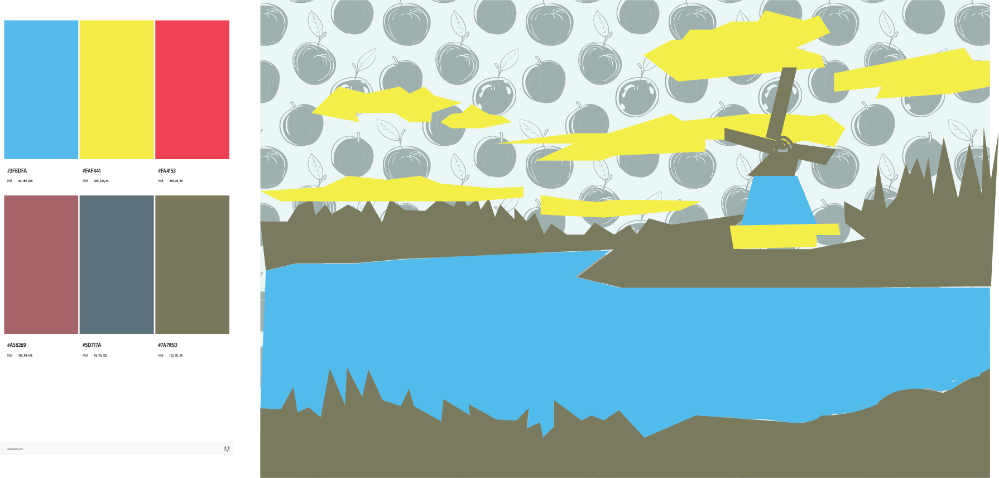

For this assignment, I created a vector illustration of a surprised pair of eyes using simple shapes and a limited color palette. I focused on the emotion of surprise by widening the eyes and raising the eyebrows to exaggerate the expression. The pupils are centered and the eyelids are open wider than normal, which helps communicate a sudden reaction or feeling of shock. I used basic vector shapes to build each part of the eye, including the iris, pupil, eyelids, highlights, and eyebrows. Keeping the design simple allowed the expression to be clear and easy to read. The dark background helps the eyes stand out and increases the contrast so the viewer’s attention goes directly to the expression. While creating the illustration in Illustrator, I organized the file using clearly named layers for each element of the eye. I also used guides and alignment tools to keep the shapes balanced and symmetrical. After completing the design, I exported the final artwork as a PNG so it can be easily uploaded on github.

I created my illustrated environment by first placing a real photograph into the file and setting it as a template layer so it would stay fixed while I worked. This allowed me to trace and reinterpret the scene while building the illustration on separate layers. To organize the composition, I divided the artwork into foreground, middle ground, and background sections, which helped me try maintain depth and made it easier to control different elements of the scene. I was restricted to only three colors from a triadic color scheme, which made it difficult to be creative for me. I used colors #7A795D, #FAF441, and #3FBDFA. Instead of relying on automated tools like Image Trace, I constructed all elements manually using the pen tool and basic shapes. After completing the composition, I exported the artwork as a 1920×1080 PNG to upload to github.
Contact: @britany.palaguachi07@myhunter.cuny.edu Index page